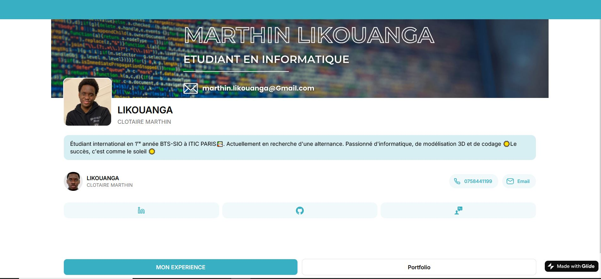
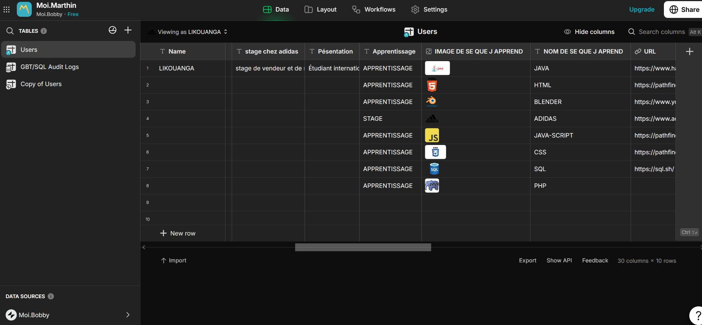
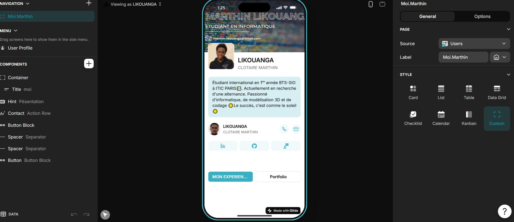

🎯 Contexte du projet
Ce projet est une application mobile moderne réalisée sans écrire une seule ligne de code, grâce à la plateforme no-code Glide. L'objectif était d'explorer une approche de développement rapide et accessible, permettant de concevoir, prototyper et déployer une solution digitale fonctionnelle en un temps réduit. Ce projet illustre comment les outils no-code peuvent répondre à des besoins concrets sans nécessiter de compétences en développement traditionnel.
🎓 Objectifs pédagogiques
- No-Code : Concevoir une application complète sans écrire de code
- Glide : Maîtriser l'environnement de création d'applications mobiles Glide
- Base de données : Intégrer et structurer une base de données dans l'application
- Automatisation : Mettre en place des processus automatisés sans code
- UI/UX mobile : Concevoir une interface utilisateur intuitive adaptée au mobile
- Prototypage rapide : Itérer et déployer rapidement une solution digitale
✨ Fonctionnalités principales
1. Création d'application mobile sans code
L'application a été entièrement conçue via l'interface visuelle de Glide, sans recourir au développement traditionnel. Chaque écran, composant et interaction a été configuré par glisser-déposer pour un résultat professionnel et déployable immédiatement.
2. Intégration de base de données
Les données de l'application sont structurées et gérées via une base de données intégrée à Glide. Les informations s'affichent et se mettent à jour dynamiquement dans l'interface, offrant une expérience utilisateur fluide et réactive.
3. Automatisation de processus
Des automatisations ont été configurées pour déclencher des actions sans intervention manuelle : envoi de notifications, mise à jour de données, ou déclenchement de workflows selon les interactions de l'utilisateur.
4. Interface utilisateur intuitive
L'interface a été pensée pour être accessible et agréable à utiliser sur mobile. La navigation, les composants visuels et la hiérarchie de l'information respectent les standards d'une application mobile moderne.
📸 Captures d'écran

Interface principale

Base de données

Éditeur Glide
🗄️ Architecture de l'application
Composants principaux :
- Écrans Glide : Pages et vues configurées visuellement dans l'éditeur
- Tables de données : Structuration des données intégrée à Glide
- Automatisations : Workflows et actions déclenchées automatiquement
- Composants UI : Listes, formulaires, boutons et médias configurés sans code
🛠️ Stack technique
Glide
Plateforme no-code de création d'applications mobiles avec base de données intégrée
Automatisations
Workflows et déclencheurs configurés visuellement pour automatiser les processus
Base de données
Stockage et gestion des données intégrés directement dans l'environnement Glide
🚀 Défis relevés
- Prise en main de l'environnement no-code Glide et de ses spécificités
- Structuration d'une base de données cohérente sans recourir au SQL
- Conception d'une interface mobile intuitive via l'éditeur visuel
- Mise en place d'automatisations pour remplacer la logique applicative traditionnelle
- Prototypage et déploiement rapide d'une solution fonctionnelle
- Adapter sa façon de penser le développement au paradigme no-code